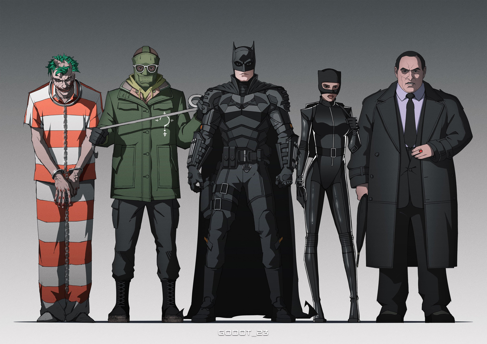

About Batman
Batman is the best! He is a crime-fighter superhero, an amazing detective and a very skilled martial artist
Batman and his enemies
The villains of Gotham
- The Riddler is a mentally disturbed orphan who likes to toy with Batman.
- The Penguin is just a pawn in the big guy's game, for now just the owner of a night club.
- The Joker will probably be the next big bad in Batman's journey as it was hinted by his presence in the Arkham Asylum.
Batman's gadgets
The Dark Knight has some of the most useful and convienent tools to help him investigate and fight crime while staying hidden in the shadows. Here are some of his most recognizable ones:
- Utility belt
- Bat-Computer
- The Bat-Suit